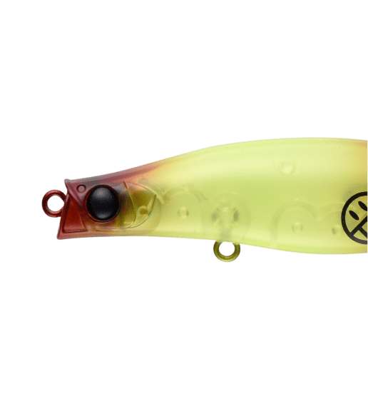
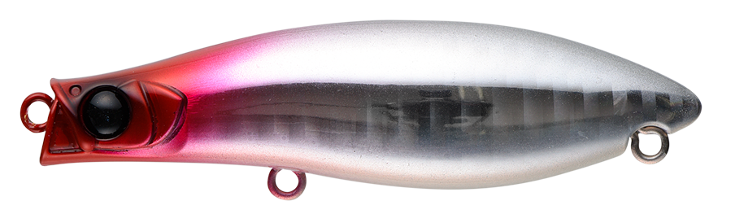
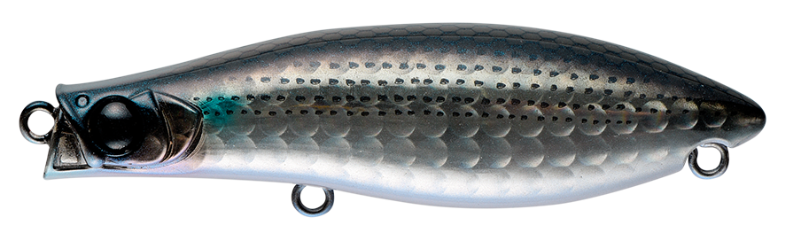
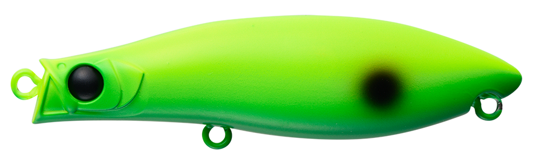
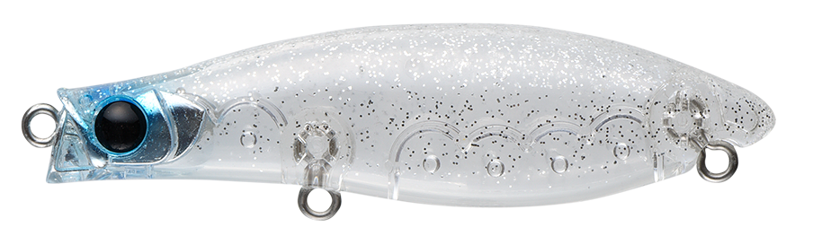
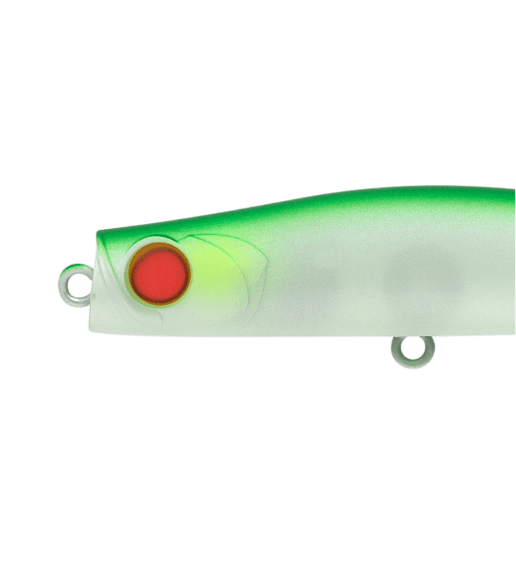
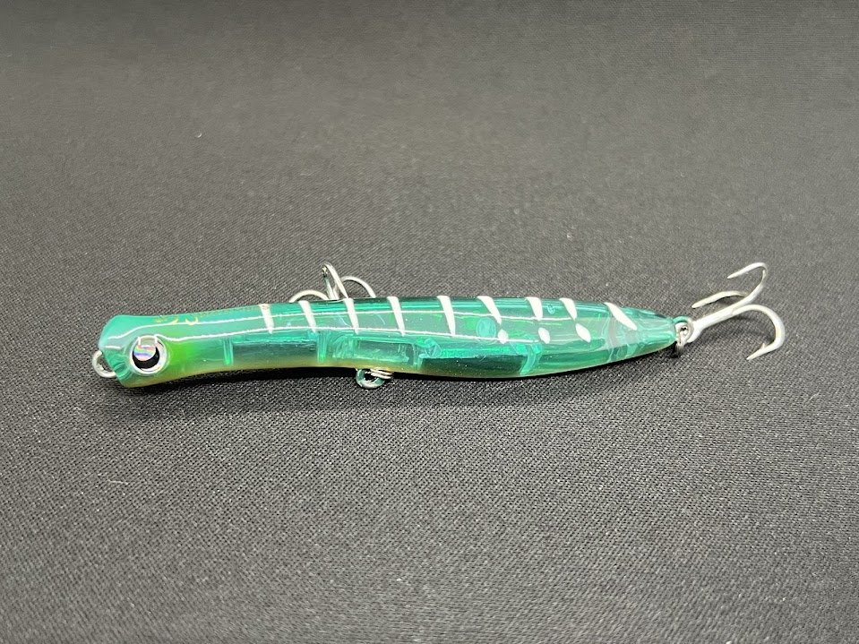
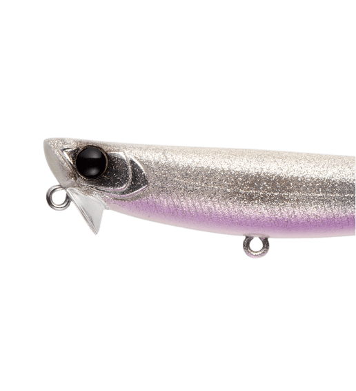

パンチライン カーヴィ70SS
（PUNCHLINE CURVY70SS）
パンチライン カーヴィ70SS（PUNCHLINE CURVY70SS）はAPIA（アピア）のスローシンキングペンシルです。
内田聖氏が監修した「一風変わったパンチライン」で、名前のとおりボディ後方の浮力をふんだんに確保したポッチャリボディが、これまでにない浮遊感を生み出します。シリーズ中最も遅いフォール速度と水平姿勢で、シャローや流れの緩いエリアでも漂うようなナチュラルなドリフトができる、激戦区対応のコンパクトモデルです。

画像出典:APIA公式HP
スペック
- メーカー
- APIA（アピア）
- タイプ
- スローシンキング（シンキングペンシル）
- 全長
- 70mm
- 自重
- 11g
- フック
- #8×2（BKK FANGS-62UA）
- アクション
- S字スラローム＋ローリングフォール
- ターゲット
- シーバス
- 価格
- 1,738円（税込）
▼今すぐチェック
パンチライン カーヴィ70SSの特徴
流れに“負ける小魚”を演出する、シャロー・小場所向けの高感度シンペン
-
後方浮力のポッチャリボディで“超高感度”
70mmのコンパクトボディの後方にたっぷり浮力を確保し、わずかな潮流の変化にも反応する高感度ボディを実現。ヨレの中を通すと流れの影響を受け、流れに負ける小魚のような“隙”だらけの挙動を見せる。
-
シリーズ最遅のフォールと水平姿勢
ウエイト配分をぎりぎりまで調整し、シリーズ内で最も遅い沈下速度と水平姿勢のフォールを実現。シャローや流れの弱いエリアでも「見せる」フォールが使え、明暗の奥に静かに流し込める。
-
小粒でも十分な飛距離
ファットボディながら空気抵抗を抑えた設計で、飛行姿勢が安定していて十分な飛距離を出せる。ハイプレッシャーエリアのスレた魚にも効くサイズとナチュラルなアピール。
パンチライン カーヴィ70SSの使い方
基本は流れに乗せるドリフトとスローなただ巻き。アップクロスにキャストし、ラインを張りすぎずにゆっくりとしたS字を描かせながら、明暗やヨレへ流し込みます。
フラットヘッドは水をあまり噛まないように小さめに設定されているので、人為的なアクションは控えめにして、流れの力でルアーを動かすイメージで使うのがコツ。高速で巻くとミノーのような動きになり、ときに不規則なアクションも出ます。
パンチライン カーヴィ70SSの得意な状況
港湾や運河、小〜中規模河川など、比較的流れの緩いエリアが主戦場。
水深1m以下のシャローや小場所、マイクロベイトに着いた魚、スレてタフな状況で強い1本です。パイロットルアーとしても、ここぞという時の食わせの一手としても使えます。
ワンポイント
「水平姿勢＋高浮力ボディ」でシャローレンジに自ら留まれるので、巻き速度でレンジを調整するよりも、スローテンポを保ったまま流すことを意識しましょう。
開発時には、明暗に差し掛かる前に食ってくる“想定外のバイト”が多発したとのこと。流し込む途中でも気を抜かないのがポイントです。
パンチラインシリーズの使い分け
| モデル | 全長／自重 | 得意な場面 |
|---|---|---|
| パンチライン60 | 60mm／5g | 小型ベイトのシーバスに |
| パンチライン カーヴィ70SS | 70mm／11g | スローシンキング。流れの緩いシャロー・小場所に（本記事のモデル） |
| パンチライン80 | 80mm／13g | 河川・港湾のシーバスの基準モデル |
| パンチライン スリム90 | 90mm／12g | 細身のシルエット |
| パンチライン マッスル80 | 80mm／16g | ファストシンキング。飛距離と深さが欲しいときに |
パンチラインは「大場所を巻きで広く探れるシンペン」として使いやすいシリーズですが、カーヴィ70SSは小場所やシャローでスローに攻めるために作られた、シリーズの中でも異色のモデルです。パンチライン80の詳細はパンチライン80の記事で紹介しています。
人気カラー
パンチライン カーヴィ70SSは全12色展開。シーバス狙いでオススメのカラーを厳選して紹介します。

レッドヘッドホロ定番のレッドヘッドにホロのフラッシングを加えた1色。

ボラボラ（イナッコ）パターンに合わせやすいナチュラル系。

ネオdoチャート高アピールのチャート。マズメや濁り潮に。

シラス一番シラスなど小さなベイトに合わせやすいカラー。
画像出典:APIA公式HP
パンチライン カーヴィ70SSに似ているルアー
-

パンチライン80 アピア 詳細はこちら＞同じパンチラインシリーズの基準モデル。全長80mm・自重13gで、少し広い場所を巻きで探りたいときに。
-

スウォーム80S GOTO9 詳細はこちら＞全長80mm・自重8.6gのシンキングペンシル。表層付近をナチュラルに引けるシンペンとして、ローテーションの選択肢になる。
-

ハイドロアッパー90S アピア 詳細はこちら＞全長90mm・自重16gの浮上型シンキングペンシル。表層直下をキープしたいときの持ち替えに。